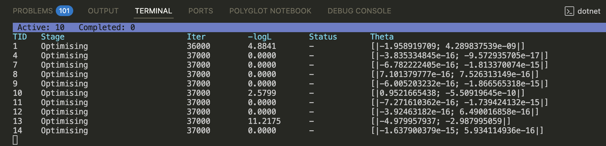

Techniques: Ensembles and Parallel Processing
Model-fitting and model-selection usually requires running multiple model runs, for multiple hypotheses, and sometimes for multiple datasets, resulting in hundreds of individual model runs.
Bristlecone includes capabilities to orchestrate the parallel
running of such complex analyses within the
Bristlecone.Workflow namespace. Using Bristlecone's
OrchestrationAgent, you can queue jobs to run when processor
cores are available.
Work Packages
To run your analyses in parallel, you must wrap up each analysis
as a work package. A work package is simply an async computation
that returns an estimation result, with the function signature
Async<ModelSystem.EstimationResult>. A simple example function to
setup work packages for a number of datasets, hypotheses, and individuals
is given below:
open Bristlecone
let replicates = 3 // number of replications per analysis
let endCondition = Optimisation.EndConditions.atIteration 100000<iteration>
let workPackages datasets hypotheses engine =
seq {
for d in datasets do
for h in [ 1 .. hypotheses |> List.length ] do
for _ in [ 1..replicates ] do
yield async { return Bristlecone.fit engine endCondition d hypotheses.[h - 1] }
}
You can perform any additional steps within each work package. A common
approach is to save each model result to disk (i.e., using functions from
the Bristlecone.Data namespace) within the async
block in the above code, so that results are available as soon as
they are complete.
When the EstimationEngine, datasets, and hypotheses are
applied to this function, the resultant seq<Async<EstimationResult>>
can be passed to an orchestration agent.
Orchestration Agent
An orchestration agent manages the running of work packages depending on your local computer's resources. You can access these features through the following namespace:
open Bristlecone.Workflow
There are three arguments required to create an OrchestrationAgent:
-
A logger (
LogEvent -> unit), which consumes log messages from all threads. You must ensure that the logger is safe to use from multiple processes. Bristlecone includes some loggers that are thread-safe. In addition, theBristlecone.Charts.RNuGet package contains interoperability with R to produce real-time traces of the movement of each analysis through parameter space; this is very useful for example with MCMC optimisation techniques to compare chains. -
The number of processes to run in parallel. The recommended approach is to set this to
System.Environment.ProcessorCount, which represents the number of cores available on your system. -
Whether to cache results in the resultant object. This increases memory usage, but allows post-hoc analysis of the results. A common approach is to set this to
falsebut save each result to disk within the work package itself (see above). The results can then be re-loaded at a later date for diagnostics and further analysis.
First, let's use one of Bristlecone's built-in loggers to print the progress of each work package:
let logger = Logging.Console.logger 1000<iteration>
let loggerTable = Logging.ConsoleTable.logger 1000<iteration>
There are two main built-in loggers. The first logger will print the current point in parameter space each thousand iteration, for each chain (along with process IDs). The second logger is a multi-threaded table logger, which presents the current status of each thread's optimiser in a table form as below:

Next, let's create and setup the orchestration agent:
let orchestrator () =
Orchestration.OrchestrationAgent(logger, System.Environment.ProcessorCount, false)
fun datasets hypotheses engine ->
let orch = orchestrator ()
// Orchestrate the analyses
let work = workPackages datasets hypotheses engine
let run () =
work
|> Seq.iter (Orchestration.OrchestrationMessage.StartWorkPackage >> orch.Post)
run ()
If the above code is supplied with datasets, hypotheses, and an
EstimationEngine, it will schedule, queue and run the jobs until complete.
module Bristlecone from Bristlecone
<namespacedoc><summary>The core library of Bristlecone, containing model-fitting functions.</summary></namespacedoc>
Main functionality of Bristlecone, including functions to scaffold `ModelSystem`s and for model-fitting (tests and real fits).
--------------------
namespace Bristlecone
<summary> End the optimisation procedure when a minimum number of iterations is exceeded. </summary>
val seq: sequence: 'T seq -> 'T seq
--------------------
type 'T seq = System.Collections.Generic.IEnumerable<'T>
module List from Bristlecone
--------------------
module List from Microsoft.FSharp.Collections
--------------------
type List<'T> = | op_Nil | op_ColonColon of Head: 'T * Tail: 'T list interface IReadOnlyList<'T> interface IReadOnlyCollection<'T> interface IEnumerable interface IEnumerable<'T> member GetReverseIndex: rank: int * offset: int -> int member GetSlice: startIndex: int option * endIndex: int option -> 'T list static member Cons: head: 'T * tail: 'T list -> 'T list member Head: 'T with get member IsEmpty: bool with get member Item: index: int -> 'T with get ...
<summary>Fit a time-series model to data.</summary>
<param name="engine">An estimation engine configured and tested for the given model.</param>
<param name="endCondition">The condition at which optimisation should cease.</param>
<param name="timeSeriesData">Time-series dataset that contains a series for each equation in the model system.</param>
<param name="model">A model system of equations, likelihood function, estimatible parameters, and optional measures.</param>
<returns>The result of the model-fitting procedure. If an error occurs, throws an exception.</returns>
<summary> Simple logger to console that prints line-by-line progress and events. </summary>
<summary> A simple console logger. `nIteration` specifies the number of iterations after which to log the current likelihood and parameter values. </summary>
<summary> Queue functions to manage many work packages in parallel. [ Inspired by Tom Petricek: http://fssnip.net/nX ] </summary>
type OrchestrationAgent<'date,'timeunit,'timespan> = new: writeOut: (LogEvent -> unit) * maxSimultaneous: int * retainResults: bool -> OrchestrationAgent<'date,'timeunit,'timespan> member Post: msg: OrchestrationMessage<'date,'timeunit,'timespan> -> unit member TryGetResult: unit -> EstimationResult<'date,'timeunit,'timespan> option
<summary> The `OrchestrationAgent` queues work items of the type `Async<EstimationResult>`, which are run in parallel up to a total of `maxSimultaneous` at one time. </summary>
--------------------
new: writeOut: (Logging.LogEvent -> unit) * maxSimultaneous: int * retainResults: bool -> Orchestration.OrchestrationAgent<'date,'timeunit,'timespan>
<summary>Provides information about, and means to manipulate, the current environment and platform. This class cannot be inherited.</summary>
<summary>Gets the number of processors available to the current process.</summary>
<returns>The 32-bit signed integer that specifies the number of processors that are available.</returns>
module Seq from Bristlecone
--------------------
module Seq from Microsoft.FSharp.Collections